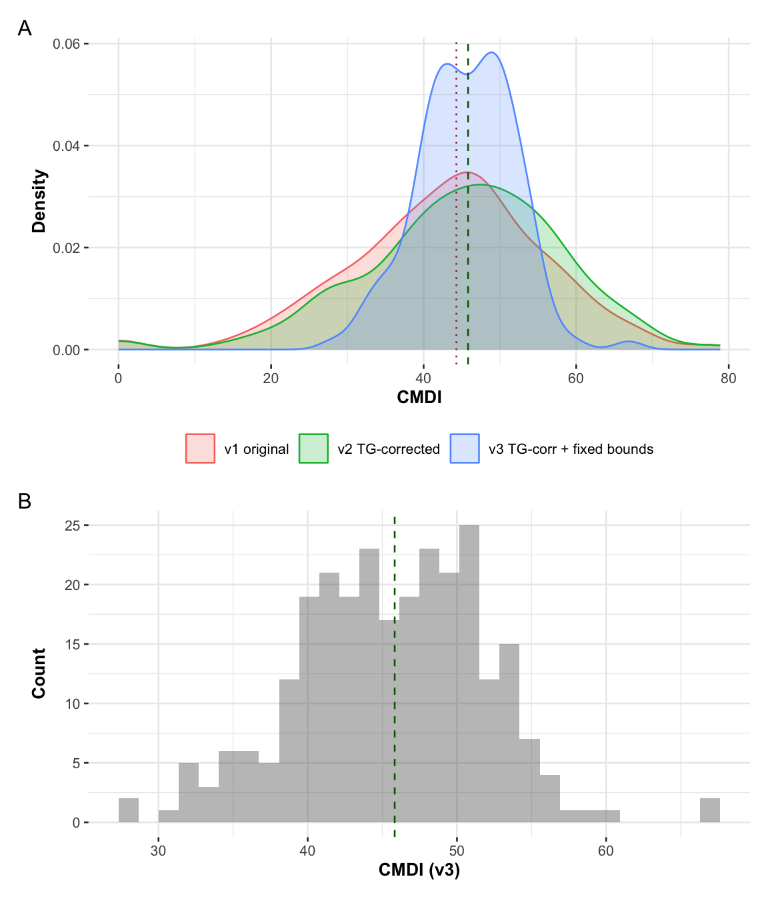
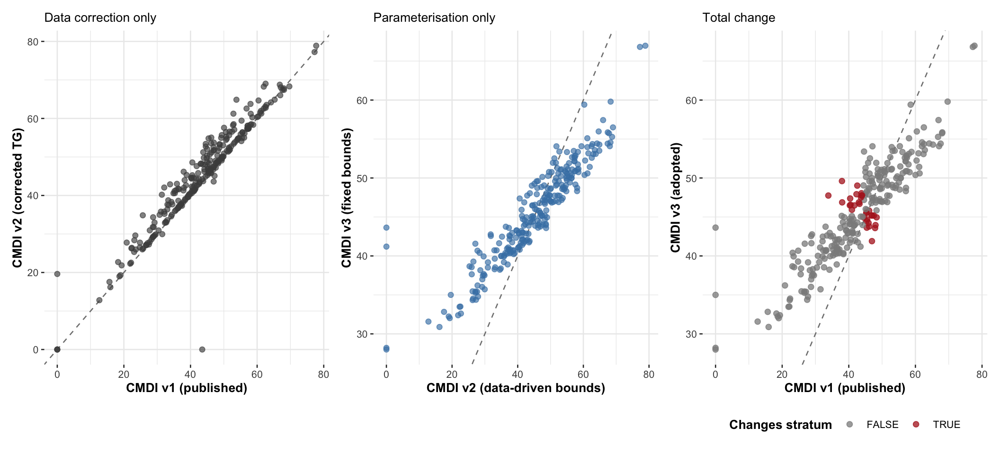

| c_target | median | min | max | spearman |
|---|---|---|---|---|
| 0.2 | 16.47 | 6.49 | 39.42 | 0.999972 |
| 0.3 | 25.94 | 10.95 | 49.84 | 1.000000 |
| 0.4 | 35.81 | 18.58 | 58.86 | 1.000000 |
| 0.5 | 45.98 | 27.99 | 66.97 | 1.000000 |
| 0.6 | 56.41 | 39.13 | 74.42 | 1.000000 |
| 0.7 | 67.05 | 51.94 | 81.36 | 1.000000 |
| 0.8 | 77.87 | 66.37 | 87.89 | 1.000000 |
Reconstructing the Composite Metabolic Desirability Index after a triglyceride data correction
Diagnostics for the index construction prior to refitting the prediction model
1 Purpose and scope
Triglyceride values were found to be inaccurate for a substantial share of observations in the biochemical panel. Because triglycerides are one of the four components from which the Composite Metabolic Desirability Index (CMDI) is built, the correction propagates into the outcome of the clinical prediction model rather than into a single predictor.
The prediction model is fitted with bootPriorProc, which takes approximately 6.2 hours to run. Repeating that run under several candidate constructions would be costly, so the purpose of this document is to settle the index construction first, using diagnostics that are less time consuming.
Three constructions are compared:
| Label | Triglycerides | Desirability bounds |
|---|---|---|
| v1 | original | data-driven (use_data = TRUE) |
| v2 | corrected | data-driven (use_data = TRUE) |
| v3 | corrected | fixed clinical bounds (use_data = FALSE) |
The three pairwise comparisons separate the two sources of change: v1 → v2 isolates the data correction, v2 → v3 isolates the parameterisation, and v1 → v3 gives the total that downstream reporting would have to absorb.
The prediction model is an ordinal regression one, which is rank-based and invariant to monotone transformations of the outcome. Changes in the scale or spread of the CMDI therefore have no effect on the fitted model; only changes in the ordering of participants do. Rank correlation is used throughout as the primary measure of impact for this reason.
2 Data preparation and the three index constructions
Corrected triglycerides and imputation
Missing values are imputed with the same random-forest procedure used for the original analysis (miceRanger), and the multiply-imputed datasets are collapsed by taking the mean for numeric variables and the mode for character variables.
Scale of the triglyceride change
The correction is not marginal. Median triglycerides rise by half and the upper tail extends considerably further.
| Statistic | Original | Corrected |
|---|---|---|
| n | 299 | 296 |
| Mean | 84.6 | 123.7 |
| Median | 70.0 | 105.0 |
| Gini mean difference | 57.5 | 79.7 |
| 25th percentile | 46.8 | 70.9 |
| 75th percentile | 107.0 | 141.7 |
| 95th percentile | 180.2 | 235.0 |
| Maximum | 590.1 | 1351.6 |
The difference in row counts reflects three records with missing BMI, which the desirability functions exclude in either case; the analysis set is unaffected.
v2: corrected triglycerides, data-driven bounds
This is the construction as originally specified, with the triglyceride scale re-tuned so that the IDF threshold of 150 mg/dL continues to map to a desirability of 0.6 under the new data range.
v3: corrected triglycerides, fixed clinical bounds
The bounds are stated explicitly and the scale for each component is solved so that the clinical anchor is preserved exactly. Solving rather than hard-coding means a change to any bound cannot silently break the anchoring.
| Component | Kind | low | high | anchor | target | scale |
|---|---|---|---|---|---|---|
| BMI | d_max |
14 | 70 | 30 | 0.5 | 0.553 |
| TRIG | d_max |
15 | 1000 | 150 | 0.5 | 0.349 |
| HDL | d_min |
10 | 130 | 45 | 0.5 | 2.010 |
| GLU | d_max |
40 | 500 | 100 | 0.5 | 0.340 |
A small floor is applied to each component before aggregation. Under a geometric mean a single component at zero forces the whole index to zero, so the floor prevents one extreme value from erasing the information in the other three. With the bounds above no observation reaches the floor, so it acts as insurance rather than doing real work.
3 Why the bounds were changed
The move from data-driven to fixed bounds was not part of the original plan. It was prompted by two observations that emerged while diagnosing the correction.
Scores that depend on other participants
With use_data = TRUE the desirability bounds are taken from the observed range, so the participant holding the sample minimum receives a desirability of exactly zero on that component. Because the index is a geometric mean, that zero propagates to the whole index.
The clearest example is ID 132 at timepoint 3. Their triglyceride value is 35 mg/dL in both the original and corrected datasets, it did not change. Their CMDI nonetheless fell from 43.5 to 0, because the sample minimum moved from 15.47 up to 35, making them the new floor-holder.
| ID | Timepoint | TRIG (v1) | TRIG (v2) | CMDI v1 | CMDI v2 |
|---|---|---|---|---|---|
| 132 | 3 | 35.0 | 35.0 | 43.5 | 0.0 |
| 207 | 1 | 15.5 | 35.4 | 0.0 | 19.6 |
An index in which one participant’s score changes because a different participant’s data changed is difficult to defend as an individual-level quantity, and it is incompatible with applying the index to an external cohort.
A clinically implausible score
ID 132 at timepoint 3 has BMI 31.1, HDL 50, glucose 96 and triglycerides 35. A CMDI of zero places this participant at the most metabolically desirable end of the scale, which is not a reasonable description of someone in the obese BMI range. The zero is an artefact of the floor mechanism rather than a summary of their metabolic state.
Selecting the bounds
Three criteria were used, in order:
- Clinical defensibility: Bounds anchored to published thresholds and chosen a priori rather than from the observed data.
- Coverage: Wide enough that saturation is rare, verified empirically. This matters because a saturated value carries no information: every observation beyond a bound receives an identical desirability.
- Portability: Fixed, so that the index can be computed identically in an external cohort.
The bounds were widened iteratively. An initial set (BMI 16–55, TG 20–500, HDL 20–110, glucose 55–250) produced 23 observations at the floor, driven by HDL ≥ 80 and glucose ≤ 70 — both common values rather than clinical extremes. The final set places each bound beyond the plausible clinical range: severe underweight through super-obesity for BMI, values below any plausible fasting measurement through the threshold for pancreatitis risk for triglycerides, severe hypoalphalipoproteinaemia through exceptional hyperalphalipoproteinaemia for HDL, and clinical hypoglycaemia through marked hyperglycaemia for glucose.
Saturation audit
| BMI_lo | BMI_hi | TRIG_lo | TRIG_hi | HDL_lo | HDL_hi | GLU_lo | GLU_hi |
|---|---|---|---|---|---|---|---|
| 0 | 0 | 0 | 1 | 0 | 0 | 0 | 0 |
No observation reaches a lower bound, so the zero-collapse mechanism cannot operate. One observation sit at or above the triglyceride ceiling of 1000 mg/dL. This is acceptable: values in that range fall into a clinically homogeneous category in which management does not differentiate further, so collapsing them is a reasonable simplification rather than a loss.
4 The anchor value
Each component’s target states the desirability assigned to a participant sitting exactly at the IDF threshold. The original specification used 0.5 where the IDF states a criterion with a strict inequality and 0.6 where it uses a non-strict inequality, on the reasoning that a participant at the threshold has already met the criterion in the latter case.
The direction of that adjustment follows from the definition, but the magnitude does not. The distinction between >150 and ≥150 concerns a single point on a continuous scale, and encoding it as a 0.1 shift in desirability, which propagates to a 36% change in the scale parameter, gives it more weight than it can carry. Two of the four anchors are also not clean IDF thresholds: the HDL anchor of 45 mg/dL is a sex-neutral compromise between the 40 mg/dL and 50 mg/dL criteria, and BMI > 30 is the IDF’s surrogate provision for when waist circumference is unavailable rather than the primary criterion.
A single anchor is used for all four components instead. The justification is that the IDF assigns equal status to each criterion (each contributes one qualifying condition, none counts for more than another) so mapping all four thresholds to the same desirability preserves that equivalence.
The specific value does not matter
With a uniform target \(c\) across components, the scale for component \(i\) is \(s_i = \log c / \log f_{a,i}\) where \(f_{a,i}\) is the anchor’s fractional position within the bounds. Then
\[\log d_i = s_i \log f_i = \log c \cdot \frac{\log f_i}{\log f_{a,i}}\]
and the log of the aggregated index is
\[\log \text{CMDI} = \frac{1}{4}\sum_i \log d_i = \log c \cdot K, \qquad K = \frac{1}{4}\sum_i \frac{\log f_i}{\log f_{a,i}}\]
\(K\) does not involve \(c\), so \(\text{CMDI} = c^{K}\) is a strictly monotone function of the same underlying quantity for any \(c \in (0,1)\). Participant ordering is therefore identical for every uniform anchor, and because all component influences scale by \(|\log c|\) together, the relative weighting is unchanged as well.
The rank correlation against the reference is exactly 1 for every value tested, confirming that the choice is a labelling decision. A value of 0.5 is used as the midpoint of the scale, and the Methods section of the paper can state plainly that the specific value is inconsequential.
5 Assembling the comparison
The high-risk cut-point is the median of each index. Because the cut is defined this way, each version splits the cohort in half by construction, so changes in stratum membership reflect rank movement rather than a shift in the overall distribution.
6 Distribution of the three indices
| version | cut | median | mean | gmd | min | max | n_zero |
|---|---|---|---|---|---|---|---|
| v1 original | 44.29 | 44.29 | 43.00 | 14.27 | 0.00 | 77.73 | 4 |
| v2 TG-corrected | 46.21 | 46.21 | 45.11 | 14.36 | 0.00 | 78.88 | 4 |
| v3 TG-corr + fixed bounds | 45.83 | 45.83 | 45.60 | 7.06 | 27.99 | 66.97 | 0 |
Descriptive statistics for the final construction over the full set of 296 scored observations:
| Statistic | Value |
|---|---|
| n | 296 |
| Distinct values | 296 |
| Mean | 45.68 |
| Median | 45.98 |
| Gini mean difference | 6.99 |
| 5th percentile | 34.48 |
| 25th percentile | 41.54 |
| 75th percentile | 50.25 |
| 95th percentile | 54.34 |
| Minimum | 27.99 |
| Maximum | 66.97 |
Two features are worth commenting on.
The index is more compressed than under data-driven bounds, with 90% of participants between roughly 34 and 54. This is expected: the bounds now represent clinically extreme values, and a score near 90 would require a participant to sit near the pathological extreme of all four components at once. Under a geometric mean, four moderate desirabilities produce a moderate composite. Since ordinal regression is invariant to monotone transformation, the compression has no effect on the model.
The maximum is also lower than under data-driven bounds. This is arguably more honest: use_data = TRUE places the worst participant near the top of the scale by construction, which gives a misleading impression that the cohort spans the full range of metabolic risk. Fixed anchors make it visible that it does not, which is consistent with the limitation already noted in the manuscript.

The histogram of the adopted construction is unimodal with a slightly longer lower tail and no pile-up at either boundary. Apparent shoulders in the kernel density estimate do not persist across bin widths and are attributable to smoothing rather than structure.
7 Zero-collapse audit
| Version | Observations with a zero component |
|---|---|
| v1 original | 4 |
| v2 TG-corrected | 4 |
| v3 fixed bounds | 0 |
| v3 before the floor | 0 |
The four observations that collapsed to zero under data-driven bounds receive plausible scores under fixed bounds:
| ID | Timepoint | ms_score_v1 | ms_score_v2 | ms_score_v3 |
|---|---|---|---|---|
| 113 | 1 | 0.00 | 0.00 | 28.20 |
| 113 | 3 | 0.00 | 0.00 | 27.99 |
| 132 | 1 | 39.48 | 40.17 | 41.07 |
| 132 | 3 | 43.52 | 0.00 | 41.20 |
| 207 | 1 | 0.00 | 19.62 | 35.00 |
| 207 | 3 | 0.00 | 0.00 | 43.64 |
8 Rank stability
| comparison | spearman | kendall | pearson | med_abs_rank_shift | pct_moving_gt10pct |
|---|---|---|---|---|---|
| v1 -> v2 (data correction) | 0.9663 | 0.8595 | 0.9531 | 12.5 | 10.7407 |
| v2 -> v3 (parameterisation) | 0.9472 | 0.8052 | 0.9204 | 14.5 | 22.2222 |
| v1 -> v3 (total) | 0.9193 | 0.7584 | 0.9105 | 18.0 | 34.4444 |

Ordering is well preserved across all three comparisons, which is the quantity that determines whether the refitted model will resemble the published one. The correction and the reparameterisation each contribute a comparable amount of movement, and neither dominates.
9 Stratum changes
| comparison | n_changed | pct |
|---|---|---|
| v1 -> v2 | 18 | 6.7 |
| v2 -> v3 | 32 | 11.9 |
| v1 -> v3 | 32 | 11.9 |
| high | low | |
|---|---|---|
| high | 119 | 16 |
| low | 16 | 119 |
Observations closest to the cut-point are those most likely to move again on refitting, and are listed below for reference.
| ID | Timepoint | ms_score_v1 | ms_score_v3 | dist |
|---|---|---|---|---|
| 32 | 3 | 46.114 | 45.808 | 0.019 |
| 135 | 3 | 48.328 | 45.846 | 0.019 |
| 35 | 1 | 45.465 | 45.919 | 0.092 |
| 47 | 1 | 40.945 | 45.921 | 0.094 |
| 143 | 1 | 45.078 | 46.014 | 0.186 |
| 51 | 3 | 45.267 | 45.525 | 0.303 |
| 51 | 3 | 45.267 | 45.525 | 0.303 |
| 5 | 3 | 46.851 | 45.193 | 0.635 |
| 135 | 1 | 46.987 | 45.187 | 0.640 |
| 17 | 3 | 47.502 | 45.180 | 0.648 |
10 Component structure and relative influence
Correlations between components
| d_BMI | d_TRIG | d_HDL | d_GLU | |
|---|---|---|---|---|
| d_BMI | 1.000 | 0.198 | 0.149 | 0.118 |
| d_TRIG | 0.198 | 1.000 | 0.327 | -0.045 |
| d_HDL | 0.149 | 0.327 | 1.000 | -0.004 |
| d_GLU | 0.118 | -0.045 | -0.004 | 1.000 |
The components are only weakly associated. The strongest relationship, between triglycerides and HDL, is consistent with atherogenic dyslipidaemia. Glucose is close to independent of both lipid components, which is less expected given that insulin resistance would predict some association along the same axis.
Two implications can be noted. First, it explains why the index is sensitive to how the components are weighted: with near-orthogonal components there is little shared variance to stabilise the aggregate. Second, it is worth noting that the CMDI is a multi-response desirability aggregation rather than a latent-variable measurement model. The Derringer–Suich framework makes no assumption that the components load on a common factor; it aggregates desirability, which is a statement about what is clinically preferable rather than a claim about dimensionality. This distinguishes the approach from factor-analytic severity scores, which do assume a single underlying factor.
Relative influence of each component
Under a geometric mean, each component’s contribution to variation in the composite is governed by the spread of its log-desirability. Since \(\log d_i = s_i \log f_i\), influence is proportional to the scale parameter.
| Component | Share of composite variation |
|---|---|
| BMI | 18.8% |
| TRIG | 25.6% |
| HDL | 46.7% |
| GLU | 8.9% |
The contributions are uneven, with HDL carrying close to half the variation and glucose under a tenth. This is a consequence of where each anchor falls within its bounds rather than a deliberate weighting: HDL is the only component whose anchor sits in the upper part of its range, which produces a convex transform that expands differences, while the other three have concave transforms that compress them. For a d_min component, widening the upper bound pushes the anchor fraction toward 1 and inflates the scale parameter sharply, so the widening adopted for portability necessarily increased HDL’s influence.
This is reported as a property of the construction rather than corrected, for reasons set out in the next section.
11 Alternatives considered
Several alternative parameterisations were tested and set aside. Each is recorded here because the reasons for rejection are part of the justification for the adopted construction.
| Alternative | Rank correlation with adopted | Reason for rejection |
|---|---|---|
Data-driven bounds (use_data = TRUE) |
— | Scores depend on other participants’ data; four observations collapse to zero |
| Mixed anchors (0.5 / 0.6 by inequality type) | 0.989 | Direction defensible, magnitude disproportionate to a single-point distinction |
| Targets solved to equalise contributions | 0.911 | Derived from the sample’s own variances, and the IDF thresholds map to desirabilities spanning 0.24–0.76 with no clinical meaning |
Linear transform (target = anchor fraction) |
— | Abandons the anchoring entirely; triglycerides then dominate at roughly 47% |
| Narrow symmetric bounds | 0.982 | 43 observations (14.5%) saturate at the HDL ceiling, reintroducing the zero-collapse problem |
Note on two of these:
Equalising the component contributions is achievable by solving for the target that gives each component the required scale. It was rejected on two grounds. The solution depends on the spread of each component in this particular sample, so it reintroduces the sample-dependence that motivated the move away from data-driven bounds, simply relocated from the bounds to the targets. It also empties the target of clinical meaning: a participant at the glucose threshold would be scored as less metabolically undesirable than one at the HDL threshold, by a factor of three, with no rationale. There is also a tension with the argument made in the manuscript’s introduction, which criticises binary definitions for treating criteria as equivalent despite heterogeneous risk implications; equal weighting by construction does the same thing.
Narrow symmetric bounds are attractive because bounds symmetric about the anchor give a scale of exactly 1, producing a linear transform with the threshold at the midpoint. The rank correlation with the adopted construction was 0.982, which initially looked acceptable. The saturation audit showed why it was not: 43 observations sat at or above an HDL ceiling of 70 mg/dL, a value that is common rather than extreme. The high rank correlation persisted because the clamping is directionally correct — high HDL is protective and those participants belong at the low-risk end — but their HDL information is lost. This is a useful reminder that rank correlation alone does not detect degraded measurement.
12 Summary and remaining checks
The adopted construction uses corrected triglycerides, fixed clinical bounds, a uniform anchor of 0.5, and a small floor applied before aggregation. On the evidence assembled here:
- No component can reach zero, so the geometric-mean collapse that produced implausible scores under data-driven bounds cannot occur.
- Saturation is limited to one observation at the triglyceride ceiling, in a range where clinical management does not differentiate.
- Participant ordering is well preserved relative to the published index, so the refitted model is expected to resemble the published one in structure, with movement concentrated among predictors near the selection threshold.
- The index no longer depends on which participants happen to be in the sample, which is a prerequisite for the external validation described in the manuscript.
- Component contributions are uneven and this is disclosed rather than adjusted, since every attempt to balance them cost more in interpretability or portability than it gained.
A check before refitting:
The near-zero correlation between glucose and the lipid components is not what insulin-resistance pathophysiology would predict, particularly since the triglyceride–HDL association is present. Given that an error has already been found in this panel, it is worth confirming that fasting status was standardised and recorded, and that glucose was assayed from the same draw as the lipids. Inconsistent fasting would decorrelate glucose while leaving the lipid relationships intact, which matches the observed pattern.